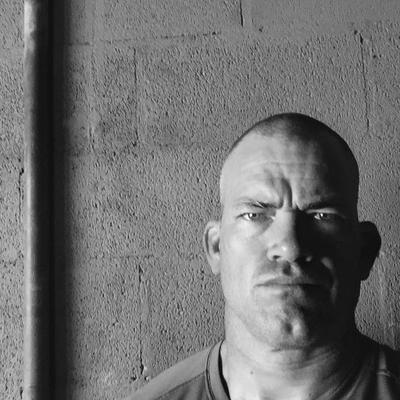
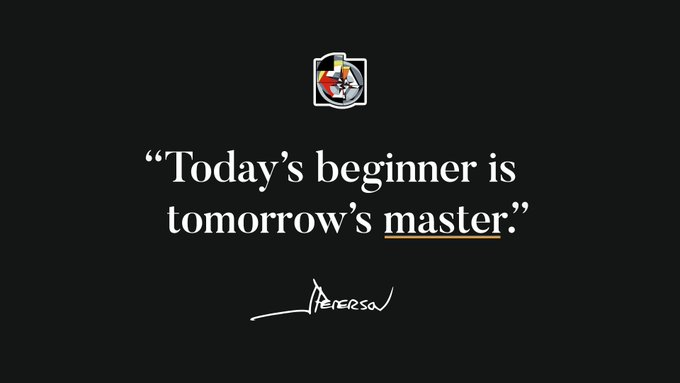
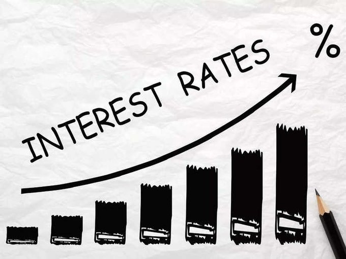

Aftermath. Freedom isn’t free. EARN IT.

You know who's #rejectionproof? A lady keeps giving me last minute courtesy calls from different cities
and states about
my warranty. She is the quintessential traveling salesman with persistence, industriousness and
entrepreneurship. I
should profile her in my next book.
No one unwilling to be a foolish beginner can learn.
It was for this reason, among others, that Carl Jung regarded the Fool as the archetypal precursor to the figure of the equally archetypal Redeemer, the perfected individual
It was for this reason, among others, that Carl Jung regarded the Fool as the archetypal precursor to the figure of the equally archetypal Redeemer, the perfected individual

#Inflation is making Indian companies borrow more - that's bad news when interest rates
are high
#InterestRate https://businessinsider.in/...
By @jainrounak
#InterestRate https://businessinsider.in/...
By @jainrounak
